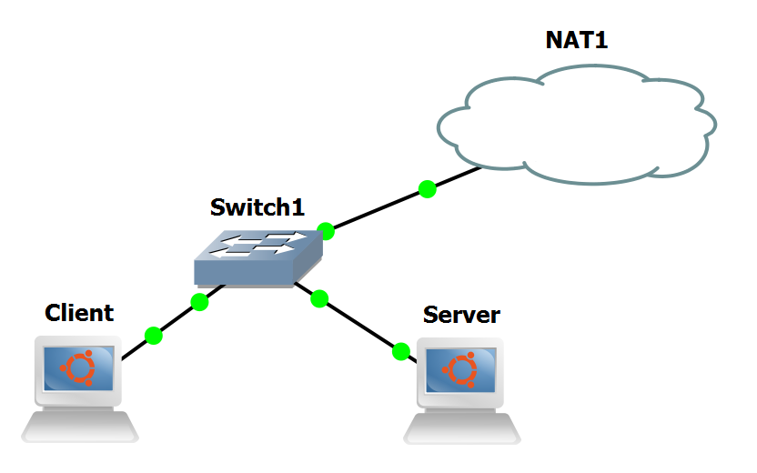
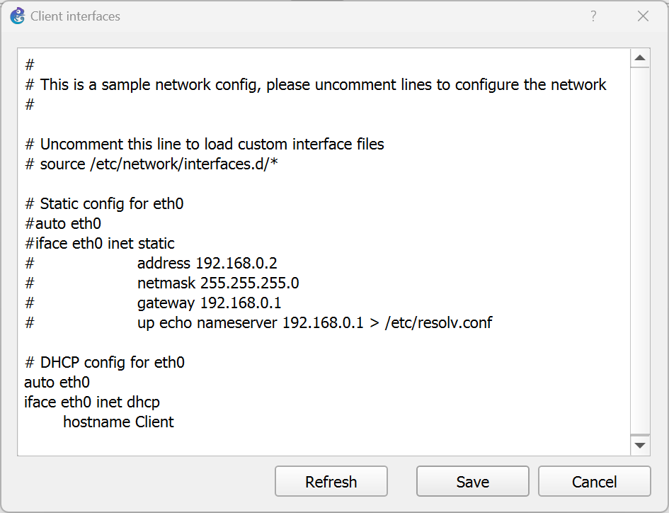
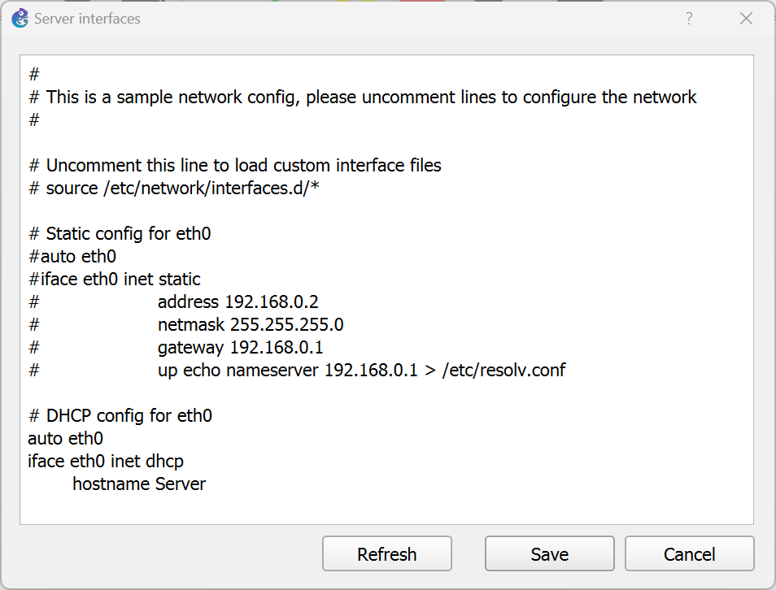
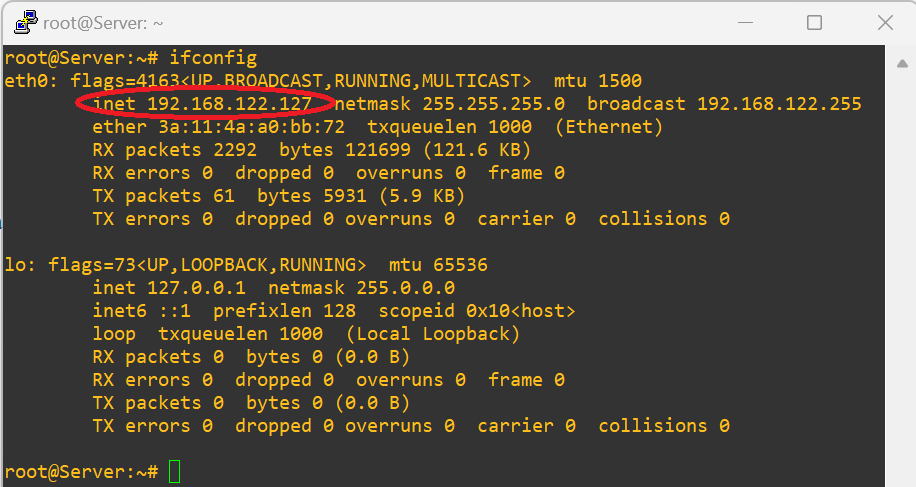
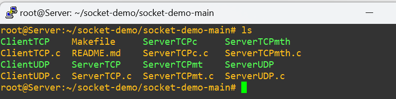
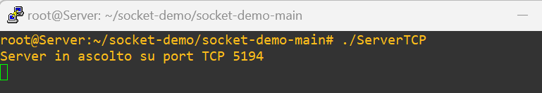
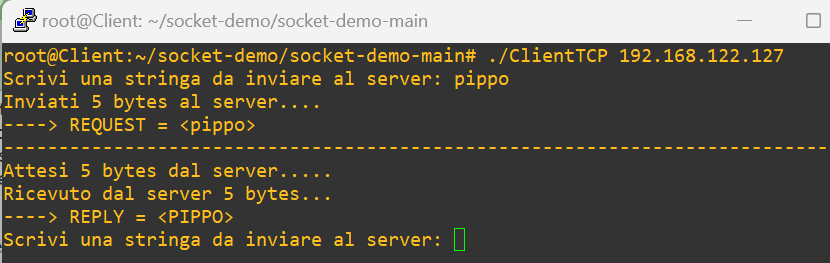
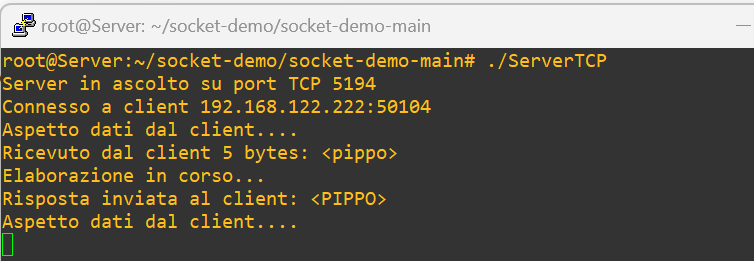
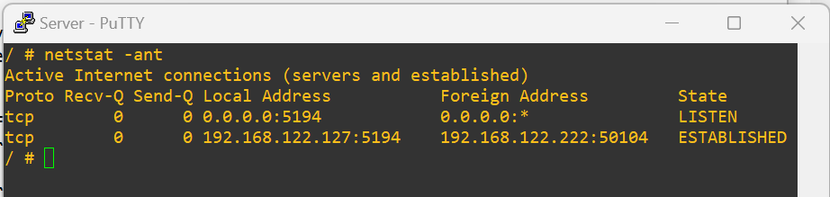
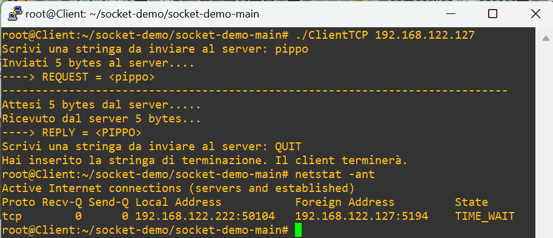

Lab #18
Client-Server communication with TCP
The purpose of this lab is to show the fundamental steps to develop and test a client-server application in C and test it in GNS3.
NOTICE: this lab requires the GNS3 VM to instantiate a Docker container of a Linux Ubuntu-based end-system.
Preparation steps
The procedure described here will be executed only once. Its purpose is to give GNS3 the ability to instantiate Docker containers based on the Ubuntu Linux distribution. These containers will only contain a minimal set of software tools. Other tools will be manually installed from the official Ubuntu software repository by means of the apt command line tool.
- In GNS3 go to Edit/Preferences... and select Docker container templates from the panel on the left of the Preferences window.
- Click on New.
- Select the Run this Docker container on the GNS3 VM option and press Next.
- Choose the New image action.
- Type ubuntu:latest in the Image name textbox and press Next.
- Confirm the default Ubuntu name for the template and press Next.
- Confirm default values for all the parameters and click Finish to complete this configuration process.
- Ubuntu will now appear in the list of available Docker container templates.
- Press OK to close the Docker container template configuration window.
Notice that the first time that the Ubuntu component will be added to a GNS3 project, the Docker container image will be pulled from Docker Hub repository. This will require a few seconds.
Experiment steps
- Recreate the following topology in GNS3. Notice that Client and Server are instances of the previously installed Ubuntu appliance.

- Right-click on Client and select "Edit config" to modify its network configuration to enable DHCP for configuration of its eth0 interface.

- Right-click on Server and select "Edit config" to modify its network configuration to enable DHCP for configuration of its eth0 interface.

- Start all devices.
- Open the Server console and use the command
ifconfig to get the IP address assigned by DHCP to the Server.
In our experiment this address is 192.168.122.127.

Code download and compilation
Open Server terminal and execute the following commands at the root prompt:
cd
mkdir socket-demo
cd socket-demo/
apt update
apt install net-tools iputils-ping wget unzip build-essential
wget https://github.com/rcanonico/socket-demo/archive/refs/heads/main.zip
unzip main.zip
cd socket-demo-main/
make
ls
The ls command should show the following output showing the executable programs besides the source code files with the .c extension.
Compilation was performed by make following directions in the Makefile.

Open Client terminal and execute the same sequence of commands listed above for the Server.
The ls command should show the same output produced on the Server.
Testing of Client and Server programs
Run ServerTCP in the Server terminal. This will produce the following output.

Run ClientTCP in the Client terminal by specifying the Server IP address on the command line.
The client program will establish a connection to the server and will ask a sequence of characters from the stdin terminated by RETURN.
This sequence of characters will be sent to the server which in turn will reply with the same sequence of characters in uppercase.
This will produce the following output on the client.

The following picture shows the corresponding output produced in the Server terminal.

Open the Server auxiliary terminal and type the command netstat -ant at the root prompt.
This is the output you should get.

Finally, type QUIT in the Client terminal to halt the client program and teardown the connection to the server.
When the client program exits, type the command netstat -ant at the root prompt.
This is the output you should get.

Return to list of labs
Copyright (c) 2024 - Roberto Canonico
Last updated: November 4, 2024 by Roberto Canonico